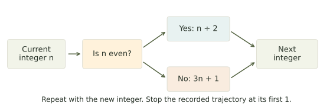
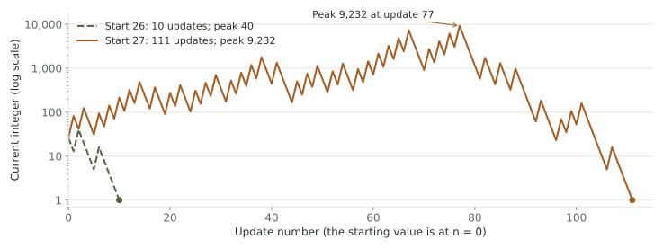
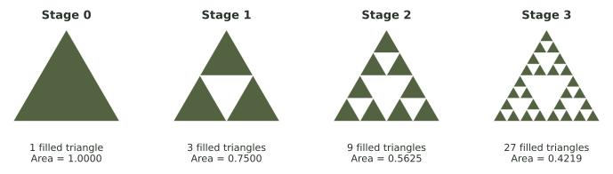
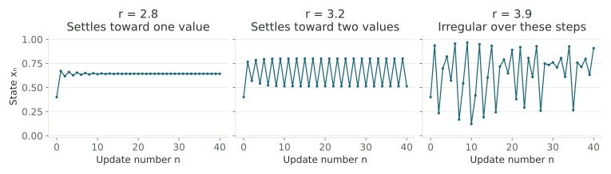
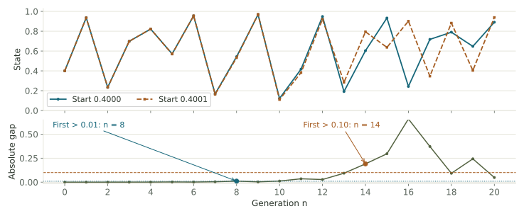
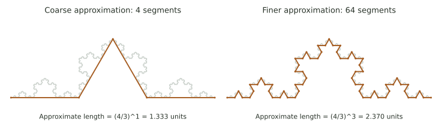

Recursion, fractals, and prediction
Follow a number through a maze, build a curve that keeps getting longer, and discover why an exact rule can still leave a forecast uncertain.
What a rule can tell us
A computer can follow a short instruction perfectly and still produce a result that surprises us. That surprise can have several causes. A number sequence can take an unexpectedly long route. A shape can acquire finer detail forever. A prediction can depend on a starting measurement more precisely than we can make it.
These examples share an initial condition and a rule applied repeatedly. They lead to different questions: whether a number sequence reaches 1, how a geometric construction's length or area changes, and how accurately two nearby starting measurements can predict later states.
A quantity, a rule, and a question
In an interest calculation or thermostat update, the current state determines the next state. The same kind of rule can define a number sequence, a population model, or a geometric construction.
A mathematical model is a deliberately simplified description of a situation. We choose what to keep track of and write a rule relating the quantities. For example, a savings model might include interest and omit fees. A population model might include crowding and omit migration. A calculated answer describes what the model predicts under those assumptions.
Set up the mathematical world before calculating
- Choose the quantity. A balance might be measured in dollars; a population might be measured in fish.
- Choose what one update means. For a balance it could be one month. For a population it could be one breeding season. For a drawing, an update means one construction stage.
- Choose the starting information and the rule. These tell us where to begin and how to obtain the next value.
- Choose the question. Are we asking for the next value, a long-run pattern, the largest value, or the difference between two forecasts?
The word state means the current condition represented by the model: a balance, temperature, population, or other quantity. The initial state is its starting condition. Dynamics means how that state changes as we apply updates.
Some examples this week are models of situations, such as a changing population. Others are mathematical constructions we invent and study, such as a number rule or a repeating drawing instruction. In each case, defining the setting makes the calculation meaningful.
What do “complexity” and “chaos” mean here?
We will use complexity broadly for behavior or structure with many details: a long number route, an intricate boundary, or a changing forecast. We will give the more specific word chaos a mathematical meaning by comparing nearby forecasts later in the reading. We begin with familiar arithmetic and build toward that idea.
The calculations rely on arithmetic, percentages, tables, and graphs. The explorer provides longer trajectories that can be compared with calculations by hand.
One rule, many updates
A recursion uses a current value to calculate the next value. A trajectory is the sequence of values it produces. The starting value has index 0; the result after one update has index 1.
Read the formula as an instruction
In \(a_{n+1}=a_n+5\), the letter \(a\) names the sequence. The small subscript tells us which step we are reading:
| Symbol | Read it as | Meaning |
|---|---|---|
| \(n\) | update number | 0 at the start; then 1, 2, 3, … |
| \(a_n\) | “a at step n” | the current value |
| \(a_{n+1}\) | “a at the next step” | the new value after one more update |
| \(a_{n+1}=a_n+5\) | “next value equals current value plus 5” | an instruction we can repeat |
The subscript in \(a_0\) labels the starting value; it does not mean “multiply \(a\) by zero.” Similarly, the \(n+1\) in the subscript labels the next step. The amount added to the current value is the 5 on the right side.
Example 1 · Read the subscript as a step counter
Start with \(a_0=10\) and apply \(a_{n+1}=a_n+5\). The values are \(10,15,20,25,30,35\). The value after five updates is \(a_5=35\). There are six recorded values, including the start.
Compare two nearby starts
Imagine two measurements of the same starting quantity: 10 and 10.1. Rather than deciding immediately which measurement is exact, we can apply the same rule to both. This gives two possible forecasts. We then ask how far apart their predictions are at the same update number.
“The difference gets bigger” does not yet tell us what kind of behavior we have. We need to say which difference we mean.
A difference in units and a difference in percent
Suppose two model balances are $50 and $52. They are $2 apart. Relative to the first balance, that gap is \(2/50=0.04=4\%\).
Absolute difference asks “how many units apart?” Relative difference asks “how large is that gap compared with the reference value?” The bars in \(|b_n-a_n|\) mean take the nonnegative size of the difference. For example, both \(|52-50|\) and \(|50-52|\) equal 2.
The relative difference above uses the first trajectory as its reference and requires \(a_n\ne0\). Multiply by 100 to express it as a percentage. The condition on the reference says it cannot be zero, because division by zero is undefined.
| Rule and starts | After the updates | What happened? |
|---|---|---|
| Add 5; start at 10 and 10.1 | After 5 updates: 35 and 35.1 | Absolute gap stays 0.1. |
| Multiply by 3; start at 1 and 1.01 | After 6 updates: 729 and 736.29 | Gap is 7.29, but relative gap stays 1%. |
| Multiply by 0.5; start at 10 and 10.1 | After 5 updates: 0.3125 and 0.315625 | Absolute gap shrinks to 0.003125. |
A growing gap can still have a simple explanation
Under multiplication by 3, the gap also multiplies by 3 at each update. We can explain its growth exactly: \(0.01\cdot3^n\). This is a useful comparison for later. It shows why “the forecasts are farther apart” needs an explanation of how they separate.
Start at 4 and 4.1. Double both values three times. What are the absolute and relative differences?
Check your reasoning
The values become 32 and 32.8. The absolute gap is 0.8. Relative to 32, the gap is \(0.8/32=0.025=2.5\%\), exactly the initial relative gap.
The Collatz problem
Here the mathematical world is the positive integers: 1, 2, 3, and so on. We are not modeling fish or money yet. We are exploring what a particular arithmetic instruction does to a whole number. One update means applying the instruction once.
Choose a positive whole number. If it is even, divide it by 2. If it is odd, multiply it by 3 and add 1. Use the result as the next input.
An even integer divides by 2 without a remainder, such as 6 or 10. An odd integer does not, such as 3 or 5. The displayed formula below simply puts those two verbal instructions into one statement. The brace says “choose the appropriate row.”

Example 2 · Trace the route from 6
First, 6 is even, so \(6/2=3\). Then 3 is odd, so \(3(3)+1=10\). Continue by checking the new value each time.
There are 8 arrows, so the trajectory first reaches 1 after 8 updates. Its largest value, or peak, is 16. If we continue after 1, we get the repeating cycle \(1\to4\to2\to1\).
Nearby starts can take very different routes
Read this graph before comparing the routes
The horizontal axis counts updates: a point above 20 describes the value after 20 instructions. The vertical axis gives the current integer.
That vertical axis uses a logarithmic scale. Read its labels: 1, 10, 100, 1,000, 10,000. Moving up one equal-sized interval multiplies the value by 10. This lets a peak of 40 and a peak of 9,232 appear on the same graph. The labels, rather than the visual height alone, tell us the values.
First compare the horizontal endpoints to see which route lasts longer. Then use the vertical labels and the table to compare peaks.

| Start | Updates to first 1 | Peak |
|---|---|---|
| 6 | 8 | 16 |
| 7 | 16 | 52 |
| 26 | 10 | 40 |
| 27 | 111 | 9,232 |
“Larger start” does not reliably mean “longer journey.” For example, 32 reaches 1 in just five updates because \(32\to16\to8\to4\to2\to1\). The explorer lets you trace an entire route and compare neighboring starts.
A connection to networks
Imagine each positive integer as a node, with an arrow to its next Collatz value. If two trajectories meet at the same number, their remaining routes agree exactly. Starting at 6 and 7, both routes eventually meet at 10. This is a directed network generated by a rule.
Starting at 5, record the trajectory to its first 1. How many updates are there? What is the peak?
Check your reasoning
\(5\to16\to8\to4\to2\to1\): 5 updates, peak 16. Count arrows, not recorded numbers.
A million successful trials still leave a question
A conjecture is a proposed mathematical statement that has not yet been proved. A proof is an argument that covers every case described by the statement. The words “every positive integer” ask for much more than a large collection of successful examples.
The Collatz conjecture says that every positive integer eventually reaches 1. Extensive computer searches support the conjecture, but a proof for every positive integer is still unknown. The exact rule is easy to state; the universal claim is difficult to establish.
Example 3 · A family we really can prove
Recall that a power counts repeated multiplications: \(2^3=2\cdot2\cdot2=8\), and \(2^4=16\). Starting from 8 gives \(8\to4\to2\to1\); starting from 16 gives one extra halving first. The same reasoning works however many factors of 2 we start with.
If the starting number is a power of 2, say \(2^k\), each even step halves it:
It reaches 1 after exactly \(k\) updates. This argument works for every nonnegative integer \(k\), so it covers infinitely many starts. It does not cover all positive integers: 7 and 27, for example, are not powers of 2.
A finite computation can settle a stated finite range. A universal proof must explain why no positive integer outside that range can escape. Conversely, a single positive integer proved never to reach 1 would refute the conjecture.
Two different questions about prediction
For any chosen Collatz integer, the next arithmetic step is straightforward. The unresolved question concerns every possible starting integer. In the population examples ahead, our question changes: how useful is a forecast when we only know the starting population approximately?
A program tests every starting integer from 1 through 10,000, and they all reach 1. Which statement is justified?
Check your reasoning
The conjecture holds for those 10,000 starting integers. The experiment provides evidence for the universal conjecture; it does not prove it for all positive integers.
Repeated geometric constructions
Now one update changes a drawing rather than a single population or balance. Think of a drawing program with a replacement instruction. Stage 0 is the original drawing. Stage 1 applies the instruction once to every original piece. Stage 2 applies it once to every piece produced at stage 1.
A self-similar object contains smaller copies of its overall pattern. We can build ideal fractals by repeating a geometric instruction at finer and finer scales. A displayed stage is a finite approximation; the ideal fractal is the limit of all stages.
For these examples, self-similar means a smaller part is an exact scaled copy of the whole limiting pattern. A fractal has structure that remains intricate as we inspect finer scales. We can draw only finitely many stages, but we can ask what the measurements do as the number of stages increases.
The Koch curve: more pieces, longer total
The distance straight across between two endpoints is different from the distance along a route between them. A winding trail can be much longer than the straight path with the same endpoints. The Koch construction makes that distinction visible and calculable.
- Begin with a straight segment of length 1.
- Divide it into thirds. Replace the middle third with the two sides of an equilateral triangular bump.
- Apply that replacement to every segment of the new curve.

Two accounts to keep: how many, and how long?
After the first Koch replacement there are four pieces. Each piece is only one-third as long as the original. So four pieces do not make a total length of 4; their total is \(4\cdot(1/3)=4/3\).
After the second replacement, each of those four pieces becomes four smaller pieces: \(4\cdot4=16\) in all. Each new piece is one-third of one-third of the original: \((1/3)(1/3)=1/9\). Total length is therefore \(16\cdot(1/9)=16/9\).
The formulas below abbreviate these repeated multiplications. \(N_n\) counts segments, \(\ell_n\) is the length of one segment, and \(L_n\) is the total length. The expression \((4/3)^n\) means multiply by \(4/3\) once for each stage.
| Stage n | Segment count Nₙ | Length per segment ℓₙ | Total length Lₙ |
|---|---|---|---|
| 0 | 1 | 1 | 1 |
| 1 | 4 | 1/3 | 4/3 ≈ 1.3333 |
| 2 | 16 | 1/9 | 16/9 ≈ 1.7778 |
| 3 | 64 | 1/27 | 64/27 ≈ 2.3704 |
| 4 | 256 | 1/81 | 256/81 ≈ 3.1605 |
Example 4 · A 9-meter starting segment
After one replacement there are four 3-meter segments, totaling 12 meters. After two replacements there are sixteen 1-meter segments, totaling 16 meters.
Using the formula gives the same result: \(L_2=9(4/3)^2=16\) meters. The formula \((4/3)^n\) by itself assumes the original length is 1.
The Sierpinski triangle: more pieces, less area
Here we measure a filled region. Its area tells how much flat surface it covers, in square units. Keeping track of area differs from measuring the length of an edge.
Start with a filled triangle of area 1. Split it into four congruent triangles and remove the central one. Repeat on each remaining filled triangle. Each step keeps three quarters of the currently filled area.

Why does each small triangle have one-quarter the area?
Each small triangle has half the base and half the height of its parent. The area formula, \(\tfrac12\times\text{base}\times\text{height}\), is therefore multiplied by \((1/2)(1/2)=1/4\). Keeping three such pieces keeps \(3\cdot(1/4)=3/4\) of the parent’s area.
| Stage | Filled pieces | Area of each piece | Total remaining area |
|---|---|---|---|
| 0 | 1 | 1 | 1 |
| 1 | 3 | 1/4 | 3/4 = 0.75 |
| 2 | 9 | 1/16 | 9/16 = 0.5625 |
For a concrete size, start with a triangle of area 16 square centimeters. After one stage, 12 square centimeters remain. After two, 9 remain. The number of pieces increases while the total area decreases.
At stage 4, there are \(3^4=81\) filled triangles, yet only \((3/4)^4=81/256\approx0.3164\) of the original area remains. That is about 31.64%, not 0.3164%. In the ideal limit, the remaining area tends to zero while a rich self-similar set remains.
What does “in the limit” mean?
We never finish infinitely many drawing stages. Instead, we study the pattern in their measurements. Koch lengths are multiplied by a factor greater than 1, so they eventually exceed any chosen length. Sierpinski areas are multiplied by a positive factor less than 1, so they get as close to zero as we choose.
The ideal Sierpinski set can have infinitely many points and still cover zero square units. A straight line segment also contains infinitely many points while having zero area in the plane. Counting points, measuring length, and measuring area ask different questions.
Geometric complexity can be exactly predictable
The Koch curve acquires intricate detail, but its finite-stage counts and lengths have exact formulas. A fractal shape does not automatically imply an unpredictable time evolution.
Optional extension · What could a dimension between 1 and 2 mean?
A line segment can be made of two half-length copies of itself. A filled square can be made of four half-size copies: two across and two up. The number of copies needed at a smaller scale helps distinguish a line from a filled region.
A Koch curve has four copies at one-third scale. Four is more than the three copies needed to make a straight segment at that scale, but fewer than the nine third-size squares needed to cover a square. Its scaling falls between those familiar cases. The dimension numbers below describe this scaling relationship.
The logarithm formula records that relationship for readers who want it. You do not need to calculate logarithms for this week’s laboratory or quiz. Here \(b\) is the reduction factor: \(b=3\) means each copy has one-third the original length.
For these exact self-similar examples, dimension compares the number of smaller copies with their scale. If there are \(N\) copies, each shrunk by a factor \(b\), the similarity dimension satisfies \(b^D=N\), so \(D=\log N/\log b\).
Koch: \(D=\log4/\log3\approx1.262\). Sierpinski: \(D=\log3/\log2\approx1.585\). These dimensions describe scaling; they are not percentages of the plane that the shape fills.
At Koch stage 3, does each segment have length 1/3 or 1/27? How does that produce the total length?
Check your reasoning
Each segment has length \((1/3)^3=1/27\). There are 64 segments, so \(L_3=64/27\). The one-third factor is applied three times.
Growth meets a limiting factor
A small population model
Imagine a pond whose population is measured once per breeding season. Let 1,000 fish be our reference population. We can describe 200 fish by the fraction \(200/1{,}000=0.2\), or 20% of the reference population.
Writing a quantity on this common 0-to-1 scale is called normalizing it. In this model, \(x=0\) means zero fish, \(x=0.5\) means 500 fish, and \(x=1\) means 1,000 fish. A model state such as 0.2 is a fraction, not a count of 0.2 fish.
To model a next season, we want growth to depend on the present population and to weaken when crowding is high. The logistic map is one simple rule built for that purpose. It is a mathematical example, with a chosen reference scale, rather than a complete ecological account of a pond.
The rule combines the current fraction with a growth setting and a limiting factor. In words: next fraction = growth setting × current fraction × remaining fraction.
We write the current fraction as \(x_n\). The next season’s fraction is \(x_{n+1}\). The setting \(r\) is a parameter: a number we hold fixed during a run. Choosing a different \(r\) changes the model’s response strength, much as changing the controller’s strength changed the temperature sequence in Week 5.
In mathematics, a map is an input-output rule. The name logistic map refers to this particular population-style update. Repeating an update is also called iterating the rule.
- \(x_n\) is the current state, normalized between 0 and 1.
- \(r\) is a fixed parameter controlling the update.
- \(1-x_n\) is a limiting factor: it gets smaller when \(x_n\) gets larger.
If \(x_n=0.2\), then \(1-x_n=0.8\). If \(x_n=0.8\), then \(1-x_n=0.2\). This complement is the limiting factor in the model: a larger current fraction leaves a smaller factor to multiply by.
Read r as a setting, not a percentage
In Week 6, multiplying a balance by 1.05 represented 5% growth each period. Here the whole multiplier is \(r(1-x_n)\), so it changes when \(x_n\) changes. For example, with \(r=2\):
| Current fraction | Limiting factor | Whole multiplier | Next fraction |
|---|---|---|---|
| 0.2 | 1 − 0.2 = 0.8 | 2 × 0.8 = 1.6 | 1.6 × 0.2 = 0.32 |
| 0.5 | 1 − 0.5 = 0.5 | 2 × 0.5 = 1 | 1 × 0.5 = 0.5 |
| 0.8 | 1 − 0.8 = 0.2 | 2 × 0.2 = 0.4 | 0.4 × 0.8 = 0.32 |
At a low population, the model’s multiplier can exceed 1 and the next population grows. At a high population, the limiting factor can make the multiplier smaller than 1 and the population falls. The chosen rule can make a strong correction. This dependence on the current state makes the update nonlinear: its effects do not follow one fixed additive or multiplicative pattern.
For \(0\le r\le4\), a starting state in \([0,1]\) stays in that interval. We can use \(x_n\) as a simplified population index, but a real population requires more information than this one equation includes.
Example 5 · Do not reuse the old input
Let \(r=2\) and \(x_0=0.2\).
- \(x_1=2(0.2)(1-0.2)=2(0.2)(0.8)=0.32\).
- \(x_2=2(0.32)(1-0.32)=2(0.32)(0.68)=0.4352\).
- \(x_3=2(0.4352)(0.5648)=0.49160192\).
Each new result replaces the previous input. The values approach 0.5.
In the 1,000-fish setting, those fractions represent approximately 200, 320, 435, and 492 fish. These are model estimates; we round fish counts for reporting while keeping the fractional calculation unrounded. A “generation” or “update” on the graph means one breeding season in this example.
A fixed point: an update that leaves the state alone
Try \(r=2\) and \(x=0.5\). The next value is \(2(0.5)(1-0.5)=0.5\). If the model reaches exactly 0.5, it keeps returning 0.5. This unchanged value is called a fixed point.
A sequence can also approach a fixed point: its later values get closer and closer to it. Our earlier run, \(0.2,0.32,0.4352,0.49160192,\ldots\), moves toward 0.5. A fixed point describes a lasting balance, whereas a first update describes what happens immediately from a particular start.
For the nonzero fixed point of this rule, we can use \(x^*=1-1/r\). The star is a label for the fixed-point value; it is not multiplication. To use the formula, divide 1 by the chosen \(r\), then subtract that result from 1. For \(r=2.8\), this gives approximately 0.642857.
Why does the fixed-point formula work?
A fixed point has the same value before and after the update, so it satisfies \(x=rx(1-x)\). For \(x\ne0\), divide both sides by \(x\), giving \(1=r(1-x)\). Divide by \(r\), then rearrange: \(1/r=1-x\), so \(x=1-1/r\). Zero is also a fixed point: without any starting population, this model produces none.
Three behaviors from the same formula
Now keep the initial state at 0.4 and change only \(r\). Read each panel like the time graphs in Week 5: move left to right through the updates, and read the vertical value at each dot. Joining the dots helps the eye follow the sequence; the calculation itself happens at the numbered updates.
A cycle is a repeating sequence of states. A two-cycle alternates between two values, as a high-low-high-low pattern. The early values may still be settling toward that pattern. A nearly horizontal row of late dots indicates approach to a fixed point instead.
In Week 5, a feedback sequence could swing because of a strong correction or delayed information. This rule uses the current population fraction directly at each season; it does not include a delayed sensor report. Here we investigate what happens as the response setting changes.

Giving chaotic behavior a meaning
The third panel does not settle into the visible one-value or two-value pattern. Its states remain between 0 and 1 while moving irregularly. To investigate further, we will run the rule twice from almost identical starts.
Mathematicians use chaos for a kind of deterministic behavior in which very small initial differences can be amplified enough to limit detailed long-range forecasts. Deterministic means that an exactly specified input has one specified next result. In our chaotic logistic examples, later values also do not settle into a fixed point or a repeating cycle. This amplification of uncertainty about the start is called sensitivity to initial conditions. The comparison ahead shows what that means numerically.
| Behavior | What to look for | Example |
|---|---|---|
| Fixed point | Later values approach one state. | r = 2.8 approaches 1 − 1/2.8 ≈ 0.642857. |
| Cycle | Later values approach a repeating pattern. | r = 3.2 approaches a two-cycle near 0.5130 and 0.7995. |
| Chaotic dynamics | Bounded irregular motion with sensitivity to nearby starts. | At r = 3.9, the nearby trajectories below separate substantially. |
A larger r does not mean “more chaos” every time
For some ranges of \(r\), repeating behavior returns. At \(r=3.83\), for example, ordinary nearby starts settle toward three values that repeat. Such a range is called a periodic window. The phrase simply means a range of parameter settings with repeating behavior.
There can also be special starting values. At \(r=4\), the exact start \(x_0=0.5\) gives \(0.5\to1\to0\to0\). These examples are why we study both the setting and the starting value, rather than labeling every run from the formula alone.
With \(r=2.8\) and \(x_0=0.2\), calculate just the next state.
Check your reasoning
\(x_1=2.8(0.2)(0.8)=0.448\). It is not the fixed point; it is the first update from the chosen start.
Knowing a rule and measuring a state are different tasks
Suppose a survey estimates 40,000 fish, but a count of 40,010 is also plausible. We have one lake and two possible descriptions of its initial state. Running the same model from both estimates lets us ask whether that small uncertainty matters later.
Using a reference population of 100,000 fish, those starts become \(40{,}000/100{,}000=0.4000\) and \(40{,}010/100{,}000=0.4001\). We call the two forecast sequences \(x_n\) and \(y_n\), so that we can compare their values at matching update numbers.
A deterministic rule gives the same next state whenever its input is exactly the same. In practice, an observation usually identifies a range of possible starting states. We can follow two nearby starts to see whether their forecasts remain close.
Example 6 · A difference of one ten-thousandth
Use \(r=3.9\) with \(x_0=0.4000\) and \(y_0=0.4001\). The first updates are
The initial gap is 0.0001; after the first update it is about 0.000078. The gap shrinks initially. Sensitivity does not require the gap to grow at every step.
Read the two panels as two different questions
In the upper panel, each line answers “what state does this starting estimate predict at generation \(n\)?” In the lower panel, each dot answers “how far apart are those two predictions at that same generation?”
The gap \(|x_n-y_n|\) is found by subtracting the smaller state from the larger. It is zero when the forecasts agree. A gap of 0.01 means one hundredth of the reference population, or 1,000 fish in this setting. It does not mean 0.01 fish.

Choose how much disagreement matters
A threshold is a chosen cutoff. Suppose the question is “when does the gap first become greater than 0.01?” Read down the gap column and stop at the first value above that cutoff:
| Generation | Absolute gap | Is the gap greater than 0.01? |
|---|---|---|
| 6 | 0.001174 | No |
| 7 | 0.004172 | No |
| 8 | 0.010896 | Yes — this is the first crossing |
| 9 | 0.003207 | No — the forecasts have moved closer again |
In this example, the earlier gaps at generations 0 through 5 are also below 0.01. “Greater than” means strictly above; a gap of exactly 0.01 would not cross this threshold. The comparison symbol in \(|x_n-y_n|>0.01\) is a compact way to ask the same question.
A tolerance is how much disagreement a decision can accept. For this pair, a tolerance of 0.01 is first exceeded at generation 8; a tolerance of 0.10 is first exceeded at generation 14. That first-crossing time gives a practical forecast horizon for the comparison: how long the forecasts initially stay within the chosen tolerance. A more demanding tolerance can give a shorter useful horizon.
The two runs explore two plausible starting estimates. To assess a whole range of plausible starts, we would need to study more than these two. Their separation also does not prove that a real population follows this particular model.
Round for display, not between updates
If 0.4001 is rounded to 0.400 before the experiment begins, the two starts become identical and their apparent difference disappears. During iteration, premature rounding changes the input to every later calculation. Keep the calculator’s stored value and round only the numbers you report.
For the first few updates, substitute the current value into the rule. For longer sequences, use the explorer's table. Keep full precision during the updates so that rounding does not change the modeled trajectory.
Deterministic does not mean easily forecast
The logistic rule contains no random-number generator. Its sensitivity concerns the consequences of imperfectly known initial conditions. Random sampling, incomplete models, and noisy measurements can also limit prediction, but they are distinct sources of uncertainty.
At generation 8, the gap is about 0.010896. At generation 9 it is about 0.003207. Has the first crossing of 0.01 moved to a later generation?
Check your reasoning
No. The first crossing is still generation 8. The trajectories can later move closer again. “First exceeds” does not mean “stays above forever.”
What does a shorter ruler reveal?
Imagine laying a straight ruler along a winding shoreline on a map. Mark where one ruler length ends, move the ruler to begin there, and keep going. Every placement contributes one ruler length to the estimate. A long ruler can bridge across a small inlet; a shorter ruler can turn into it.
The ruler length sets the measurement scale. A finer scale follows smaller details. For these idealized tables, we treat every placement as a full ruler length, so multiplying the count by the ruler length gives the reported total.
A coarse map skips small bends in a boundary. A finer map follows more of them. The coastline paradox asks what happens to a reported length as the observation scale changes.

Read the two pictures as two measurements of the same boundary. The gray detail stays in place. The colored straight pieces show the measuring routes: the finer route uses more, shorter pieces and follows more turns.
Example 7 · State both the length and the ruler
In this invented survey, measured length equals ruler length times the number of placements.
| Ruler length | Placements | Measured length | In kilometers |
|---|---|---|---|
| 100 m | 80 | 100 × 80 = 8,000 m | 8.00 km |
| 50 m | 200 | 50 × 200 = 10,000 m | 10.00 km |
| 25 m | 520 | 25 × 520 = 13,000 m | 13.00 km |
| 12.5 m | 1,340 | 12.5 × 1,340 = 16,750 m | 16.75 km |
The measured coastline has not suddenly grown. The smaller ruler follows detail that the larger ruler skipped. A meaningful report includes the measurement scale and method.
In an ideal Koch curve, finite-stage lengths grow without bound. Natural coastlines are physical objects, with tides, changing shorelines, and limits to how a boundary is defined and observed. Approximate fractal behavior across some scales does not establish literally infinite physical length.
Connection to optimization · Does a complicated boundary change the method?
In Week 8, straight-line constraints enclosed a polygon, and its corners gave a manageable list of candidate choices. A coastline is a useful reminder that the geometry we choose to represent a situation is part of the model. More detailed boundary data may require a different feasible-set description.
The corner-point method from Week 8 applies to a feasible polygon defined by linear inequalities. Replacing an edge with an irregular or fractal boundary changes the mathematical problem. A finite approximation may have many corners and may be nonconvex; the original list of vertices and linear constraints no longer describes it.
A bounded region can still have a finite, well-defined area even when its ideal boundary has infinite length. Infinite perimeter does not automatically imply undefined area. The chosen map resolution should match the decision we need to make.
A 20-meter ruler needs 600 placements. A 10-meter ruler needs 1,300 placements. Report both measured lengths.
Check your reasoning
The coarse measurement is \(20\cdot600=12{,}000\) meters (12 km). The finer measurement is \(10\cdot1{,}300=13{,}000\) meters (13 km). Report the ruler sizes along with the lengths.
What kind of question are we asking?
The same mathematical habit has appeared in different settings. Week 2 asked what a distribution describes. Weeks 3 and 4 asked how data and uncertain measurements support a conclusion. Week 5 studied how the present affects the next update. Weeks 7 and 8 asked which choices a model permits and what “best” means. Week 9 made the connections themselves visible.
Here we have asked what repeated rules can reveal, and how the answer changes with the quantity and observation scale. A large number, a long route, a finely detailed picture, and an uncertain forecast are different observations. The table helps keep their meanings clear.
| Example | What we can calculate | What still needs care |
|---|---|---|
| Collatz | The route, update count, and peak for a chosen start. | A finite collection of successes does not prove a universal claim. |
| Koch and Sierpinski | Exact finite-stage counts, lengths, and area fractions. | The drawn stage is finite; the ideal fractal is a limit. |
| Logistic map | The next state from an exact input; comparisons across starts. | Measurement uncertainty and sensitivity limit useful horizons. |
| Coastline | Length under a specified scale and method. | Different resolutions answer different measurement questions. |
| AI text generation | Probabilities in a model and the consequences of a chosen token. | A probable continuation is not evidence that its claim is true. |
Across this course, mathematics has given us ways to represent quantities, describe data, compare choices, follow feedback, and trace networks. Here those tools meet a final habit: identify the rule, identify the observation, and state what your conclusion actually covers.
Further reading: these are sources for the mathematics, not required extra assignments.
- R. M. May (1976), Simple mathematical models with very complicated dynamics.
- R. De Leo and J. A. Yorke (2021), The graph of the logistic map is a tower, including the period-three window.
- A.-S. Elsenhans (2026), Numerical verification of the Collatz conjecture for billion digit random numbers. Computation tests instances; the general conjecture remains open.
- B. Mandelbrot (1967), How long is the coast of Britain? Statistical self-similarity and fractional dimension.